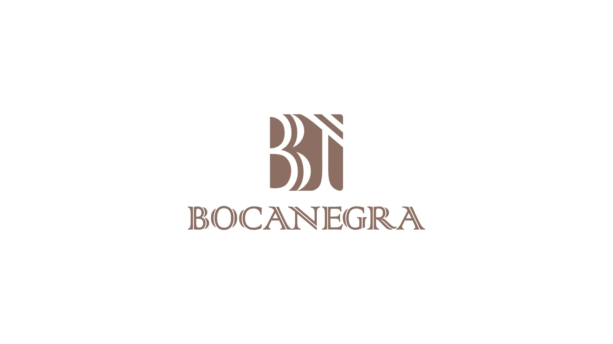
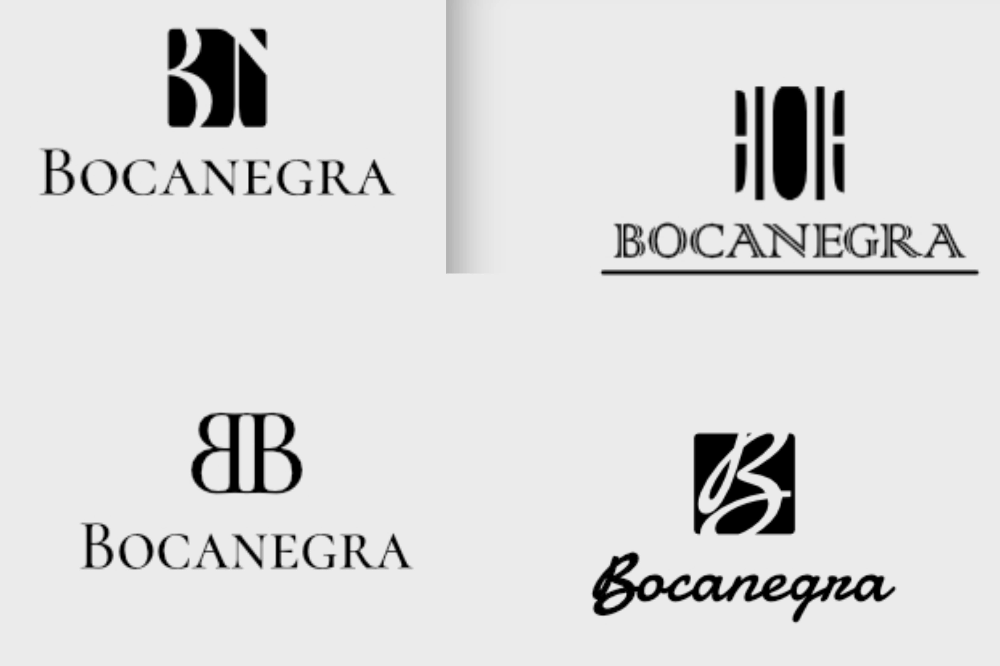

Bocanegra
Identidad para restaurante mexicano
El proyecto en dos l�neas
Bocanegra es un restaurante de comida mexicana aut�ntica en Guadalajara. Necesitaban una marca que comunicara tradici�n y calidad sin caer en lo folklorista ni en lo tur�stico.
El problema concreto
Los restaurantes mexicanos suelen usar colores muy saturados, iconograf�a de artesan�as y tipograf�as decorativas que funcionan para el turismo, pero ahuyentan al cliente local exigente. El reto fue dise�ar algo que se sintiera genuinamente mexicano pero sofisticado.
Proceso y decisiones clave
Hice un an�lisis de los restaurantes de cocina mexicana de autor m�s reconocidos del pa�s para entender c�mo comunican autenticidad sin perder sofisticaci�n. Identifiqu� tres decisiones clave:
- Paleta terrosa y contenida � colores que evocan barro, ma�z y chile seco, sin ser literales.
- Tipograf�a cl�sica mexicana reinterpretada � referencias a la gr�fica popular, pero depuradas para funcionar en digital y en men� impreso.
- Descartamos el uso de ilustraciones de comida porque hac�an la marca ver gen�rica; preferimos texturas y formas abstractas.
Galer�a





Impacto y resultados
La nueva identidad posicion� a Bocanegra como un restaurante de cocina mexicana de autor. Los due�os lograron diferenciarse de los restaurantes del mismo rango de precios y construyeron una base visual s�lida para abrir una segunda ubicaci�n.
Lo que aprend�
La cultura visual de la comida mexicana es tan rica que puede ser una trampa: hay tanto de d�nde tomar referencia que es f�cil terminar con algo sobrecargado. Aprend� que la edici�n �saber qu� quitar� es igual de importante que saber qu� a�adir.